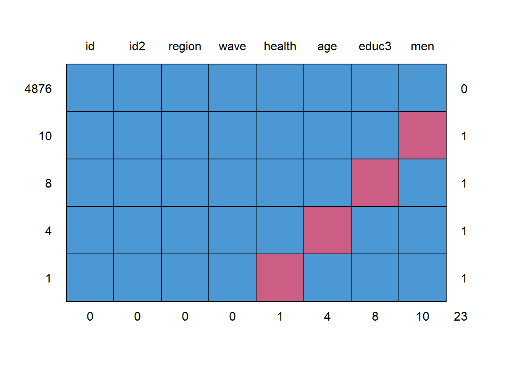

rm(list = ls())
#install.packages("installr")
require(installr)
#install.packages("foreign")
require(foreign)
require(tidyverse)
#updateR()Loading data sets
cv08 <- foreign::read.spss("Cultural_Changes_2008.sav", use.value.labels = T, to.data.frame = T)## re-encoding from CP1252cv10 <- foreign::read.spss("Cultural_Changes_2010.sav", use.value.labels = T, to.data.frame = T)## re-encoding from CP1252cv08_nolab <- foreign::read.spss("Cultural_Changes_2008.sav", use.value.labels = F, to.data.frame = T)## re-encoding from CP1252cv10_nolab <- foreign::read.spss("Cultural_Changes_2010.sav", use.value.labels = F, to.data.frame = T)## re-encoding from CP1252cv08_haven <- haven::read_spss("Cultural_Changes_2008.sav")
cv10_haven <- haven::read_spss("Cultural_Changes_2010.sav")Inspect the data
str(cv08)
str(cv08_nolab)
str(cv08_haven)
str(cv08$lftop)
str(cv08_haven$lftop)attributes(cv08$lftop)
attributes(cv08_nolab$lftop)
attributes(cv08_haven$lftop)
names(cv08_haven)
summary(cv08_haven)
head(cv08_haven)
fix(cv08)
View(cv08_haven)#str(cv08_haven$lftop)
summary(cv08_haven$lftop)## Min. 1st Qu. Median Mean 3rd Qu. Max.
## 16.00 33.00 46.00 46.78 61.00 99.00attr(cv08_haven$lftop, "labels")## < één jaar één jaar twee jaar Onbekend 125 jaar
## 0 1 2 99 125table(cv08_haven$lftop, useNA = "always")##
## 16 17 18 19 20 21 22 23 24 25 26 27 28 29 30 31 32 33 34 35
## 40 37 39 30 30 25 25 38 26 22 18 23 29 30 22 28 23 23 24 38
## 36 37 38 39 40 41 42 43 44 45 46 47 48 49 50 51 52 53 54 55
## 35 37 34 48 45 34 36 39 43 38 41 32 41 45 29 29 43 32 25 27
## 56 57 58 59 60 61 62 63 64 65 66 67 68 69 70 71 72 73 74 75
## 27 30 44 34 33 36 40 29 27 30 19 24 24 24 23 21 13 15 26 10
## 76 77 78 79 80 81 82 83 84 85 86 87 88 89 90 91 99 <NA>
## 14 17 13 13 10 7 10 10 7 6 3 8 2 3 1 3 4 0cv08$lftop_new <- cv08$lftop
cv08$lftop_new[cv08$lftop_new == "Onbekend"] <- NA
table(cv08$lftop_new, useNA = "always")##
## < één jaar één jaar 125 jaar 16 17 18 19 twee jaar 20
## 0 0 0 40 37 39 30 0 30
## 21 22 23 24 25 26 27 28 29
## 25 25 38 26 22 18 23 29 30
## 30 31 32 33 34 35 36 37 38
## 22 28 23 23 24 38 35 37 34
## 39 40 41 42 43 44 45 46 47
## 48 45 34 36 39 43 38 41 32
## 48 49 50 51 52 53 54 55 56
## 41 45 29 29 43 32 25 27 27
## 57 58 59 60 61 62 63 64 65
## 30 44 34 33 36 40 29 27 30
## 66 67 68 69 70 71 72 73 74
## 19 24 24 24 23 21 13 15 26
## 75 76 77 78 79 80 81 82 83
## 10 14 17 13 13 10 7 10 10
## 84 85 86 87 88 89 90 91 Onbekend
## 7 6 3 8 2 3 1 3 0
## <NA>
## 4levels(cv08$lftop_new)## [1] "< één jaar" "één jaar" "125 jaar" "16" "17" "18" "19"
## [8] "twee jaar" "20" "21" "22" "23" "24" "25"
## [15] "26" "27" "28" "29" "30" "31" "32"
## [22] "33" "34" "35" "36" "37" "38" "39"
## [29] "40" "41" "42" "43" "44" "45" "46"
## [36] "47" "48" "49" "50" "51" "52" "53"
## [43] "54" "55" "56" "57" "58" "59" "60"
## [50] "61" "62" "63" "64" "65" "66" "67"
## [57] "68" "69" "70" "71" "72" "73" "74"
## [64] "75" "76" "77" "78" "79" "80" "81"
## [71] "82" "83" "84" "85" "86" "87" "88"
## [78] "89" "90" "91" "Onbekend"cv08$agen <- as.numeric(as.character(cv08$lftop_new))
table(cv08$agen, useNA = "always")##
## 16 17 18 19 20 21 22 23 24 25 26 27 28 29 30 31 32 33 34 35
## 40 37 39 30 30 25 25 38 26 22 18 23 29 30 22 28 23 23 24 38
## 36 37 38 39 40 41 42 43 44 45 46 47 48 49 50 51 52 53 54 55
## 35 37 34 48 45 34 36 39 43 38 41 32 41 45 29 29 43 32 25 27
## 56 57 58 59 60 61 62 63 64 65 66 67 68 69 70 71 72 73 74 75
## 27 30 44 34 33 36 40 29 27 30 19 24 24 24 23 21 13 15 26 10
## 76 77 78 79 80 81 82 83 84 85 86 87 88 89 90 91 <NA>
## 14 17 13 13 10 7 10 10 7 6 3 8 2 3 1 3 4#str(cv08$agen)#cv08_haven <- mutate(cv08_haven, lftop_new = lftop)
#cv08_haven$lftop_new <- na_if(cv08_haven$lftop_new, 99)
#OR (more quickly)
cv08_haven <- mutate(cv08_haven, lftop_new = na_if(lftop, 99))
table(cv08_haven$lftop_new, useNA = "always")##
## 16 17 18 19 20 21 22 23 24 25 26 27 28 29 30 31 32 33 34 35
## 40 37 39 30 30 25 25 38 26 22 18 23 29 30 22 28 23 23 24 38
## 36 37 38 39 40 41 42 43 44 45 46 47 48 49 50 51 52 53 54 55
## 35 37 34 48 45 34 36 39 43 38 41 32 41 45 29 29 43 32 25 27
## 56 57 58 59 60 61 62 63 64 65 66 67 68 69 70 71 72 73 74 75
## 27 30 44 34 33 36 40 29 27 30 19 24 24 24 23 21 13 15 26 10
## 76 77 78 79 80 81 82 83 84 85 86 87 88 89 90 91 <NA>
## 14 17 13 13 10 7 10 10 7 6 3 8 2 3 1 3 4levels(cv08$var006n)## [1] "onbekend" "OP < 12 jr of volgt actueel bas.ondw."
## [3] "basisonderwijs" "vmbo"
## [5] "mavo" "havo/vwo"
## [7] "mbo" "hbo"
## [9] "wo" "wo_duplicated_8"
## [11] "Onbekend"table(cv08$var006n, useNA = "always")##
## onbekend OP < 12 jr of volgt actueel bas.ondw.
## 5 0
## basisonderwijs vmbo
## 380 287
## mavo havo/vwo
## 137 106
## mbo hbo
## 543 339
## wo wo_duplicated_8
## 0 166
## Onbekend <NA>
## 0 0cv08$educn <- as.numeric(cv08$var006n)
table(cv08$educn, useNA = "always")##
## 1 3 4 5 6 7 8 10 <NA>
## 5 380 287 137 106 543 339 166 0cv08$educ3 <- NA
cv08$educ3[cv08$educn == 2 | cv08$educn ==3] <- 1
cv08$educ3[cv08$educn > 3 & cv08$educn < 8] <- 2
cv08$educ3[cv08$educn > 7 & cv08$educn < 11] <- 3
table(cv08$educ3, useNA = "always")##
## 1 2 3 <NA>
## 380 1073 505 5prop.table(table(cv08$educ3, useNA = "always"))##
## 1 2 3 <NA>
## 0.193581253 0.546612328 0.257259297 0.002547122cv08$educ3 <- as.factor(cv08$educ3)
table(cv08$educ3, useNA = "always")##
## 1 2 3 <NA>
## 380 1073 505 5levels(cv08$educ3) <- c( "primary", "secondary", "tertiary")
table(cv08$educ3, useNA = "always")##
## primary secondary tertiary <NA>
## 380 1073 505 5#install.packages("labelled")
require(labelled)## Loading required package: labelled#str(cv08_haven$var006n)
attr(cv08_haven$var006n, "labels")## onbekend OP < 12 jr of volgt actueel bas.ondw.
## -3e+00 -1e+00
## basisonderwijs vmbo
## 1e+00 2e+00
## mavo havo/vwo
## 3e+00 4e+00
## mbo hbo
## 5e+00 6e+00
## wo wo
## 7e+00 8e+00
## Onbekend
## 1e+10table(cv08_haven$var006n, useNA = "always")##
## -3 1 2 3 4 5 6 8 <NA>
## 5 380 287 137 106 543 339 166 0cv08_haven <- mutate(cv08_haven, educ3 = recode(var006n, '-3' = -9, '-1' = 1, '1' = 1, '2' = 2, '3' = 2, '4' = 2, '5' = 2, '6' = 3, '7' = 3, '8' = 3, '10' = -9), .keep_value_labels = FALSE)
cv08_haven <- mutate(cv08_haven, educ3 = na_if(educ3, -9))
cv08_haven <- mutate(cv08_haven, educ3 = factor(educ3, levels = c(1, 2, 3), labels = c("primary", "secondary", "tertiary")))
table(cv08_haven$educ3, useNA = "always")##
## primary secondary tertiary <NA>
## 380 1073 505 5Using piping
cv08_haven <- cv08_haven %>%
mutate(cv08_haven, educ3 = recode(var006n, '-3' = -9, '-1' = 1, '1' = 1, '2' = 2, '3' = 2, '4' = 2, '5' = 2, '6'
= 3, '7' = 3, '8' = 3, '10' = -9), .keep_value_labels = FALSE) %>%
mutate(educ3 = na_if(educ3, -9)) %>%
mutate(educ3 = factor(educ3, levels = c(1, 2, 3), labels = c("primary", "secondary", "tertiary")))summary(cv08$int055)## Geen opgave N.v.t. Weet niet
## 0 0 85
## Weigert Zeer groot Groot
## 0 57 551
## Niet zo groot Helemaal geen tegenstelling
## 1213 57summary(cv08$int056)## Geen opgave N.v.t. Weet niet
## 0 0 118
## Weigert Zeer groot Groot
## 0 258 987
## Niet zo groot Helemaal geen tegenstelling
## 571 29summary(cv08$int057)## Geen opgave N.v.t. Weet niet
## 0 0 145
## Weigert Zeer groot Groot
## 0 213 803
## Niet zo groot Helemaal geen tegenstelling
## 756 46cv08$int055n <- as.numeric(cv08$int055)
table(cv08$int055n, useNA = "always")##
## 3 5 6 7 8 <NA>
## 85 57 551 1213 57 0cv08$int056n <- as.numeric(cv08$int056)
table(cv08$int056n, useNA = "always")##
## 3 5 6 7 8 <NA>
## 118 258 987 571 29 0cv08$int057n <- as.numeric(cv08$int057)
table(cv08$int057n, useNA = "always")##
## 3 5 6 7 8 <NA>
## 145 213 803 756 46 0cv08$int055n[cv08$int055n < 5] <- NA
cv08$int055n <- cv08$int055n - 4
cv08$int056n[cv08$int056n < 5] <- NA
cv08$int056n <- cv08$int056n - 4
cv08$int057n[cv08$int057n < 5] <- NA
cv08$int057n <- cv08$int057n - 4
#means per respondent
testmeans <- rowMeans(cbind(cv08$int055n, cv08$int056n, cv08$int057n), na.rm = T)
head(testmeans)## [1] 2.333333 2.666667 2.666667 2.333333 1.500000 1.333333nmis <- rowSums(is.na(cbind(cv08$int055n, cv08$ubt056n, cv08$int057n)))
testmeans <- ifelse(nmis <2, testmeans, NA)
cv08$int_mean <- testmeanstable(cv08_haven$int055, useNA = "always")##
## -3 1 2 3 4 <NA>
## 85 57 551 1213 57 0table(cv08_haven$int056, useNA = "always")##
## -3 1 2 3 4 <NA>
## 118 258 987 571 29 0table(cv08_haven$int057, useNA = "always")##
## -3 1 2 3 4 <NA>
## 145 213 803 756 46 0cv08_haven <- cv08_haven %>%
mutate(int055n = recode(int055, '-6' = -9, '-5' = -9, '-3' = -9, '-2' = -9, '1' = 4, '2' = 3, '3'
= 2, '4' = 1), .keep_value_labels = FALSE) %>%
mutate(int055n = na_if(int055n, -9)) %>%
mutate(int055n = labelled(int055n, c('Helemaal geen tegenstelling' = 1,'Niet zo groot' = 2, 'groot'
= 3, 'Zeer groot' = 4)))
cv08_haven <- cv08_haven %>%
mutate(int056n = recode(int056, '-6' = -9, '-5' = -9, '-3' = -9, '-2' = -9, '1' = 4, '2' = 3, '3'
= 2, '4' = 1), .keep_value_labels = FALSE) %>%
mutate(int056n = na_if(int056n, -9)) %>%
mutate(int056n = labelled(int056n, c('Helemaal geen tegenstelling' = 1,'Niet zo groot' = 2, 'groot'
= 3, 'Zeer groot' = 4)))
cv08_haven <- cv08_haven %>%
mutate(int057n = recode(int057, '-6' = -9, '-5' = -9, '-3' = -9, '-2' = -9, '1' = 4, '2' = 3, '3'
= 2, '4' = 1), .keep_value_labels = FALSE) %>%
mutate(int057n = na_if(int057n, -9)) %>%
mutate(int057n = labelled(int057n, c('Helemaal geen tegenstelling' = 1,'Niet zo groot' = 2, 'groot'
= 3, 'Zeer groot' = 4)))
#mean regardless of how many missings
cv08_haven <- cv08_haven %>%
rowwise() %>%
mutate(int_mean = mean(c(int055n, int056n, int057n), na.rm = TRUE))
#mean with max 1 missing, otherwise NA
cv08_haven <- cv08_haven %>%
mutate(int_mean_temp = rowMeans(cbind(int055n, int056n, int057n), na.rm = TRUE), nmis =
rowSums(is.na(cbind(int055n, int056n, int057n))), int_mean = ifelse(nmis < 2, int_mean_temp,
NA)) %>%
dplyr:: select(-int_mean_temp, -nmis)cv08_sel <- cv08[, c("we_id", "lftop", "geslacht", "var006n", "v401", "landd")]
cv10_sel <- cv10[, c("Sleutel", "var002", "var001", "Vltoplop", "V401", "Landd")]names(cv08_sel) <- names(cv10_sel) <- c("id", "age", "sex", "educ", "health", "region")
summary(cv08_sel)## id age sex educ health
## 36775330: 1 39 : 48 Onbekend: 10 mbo :543 goed, :1060
## 36775340: 1 40 : 45 Man :996 basisonderwijs :380 zeer goed, : 504
## 36775420: 1 49 : 45 Vrouw :957 hbo :339 gaat wel, : 320
## 36775440: 1 58 : 44 vmbo :287 slecht, : 67
## 36775450: 1 44 : 43 wo_duplicated_8:166 of zeer slecht?: 12
## 36775460: 1 52 : 43 mavo :137 Geen opgave : 0
## (Other) :1957 (Other):1695 (Other) :111 (Other) : 0
## region
## Postcode (nog) onbekend: 0
## Noord-Nederland :220
## Oost-Nederland :416
## West-Nederland :853
## Zuid-Nederland :474
##
## summary(cv10_sel)## id age sex educ
## Min. :20131231 Min. :16.00 Man :1512 OP volgt actueel basisonderwijs: 0
## 1st Qu.:20131965 1st Qu.:34.00 Vrouw:1424 Lager onderwijs : 459
## Median :20132699 Median :48.00 Lbo : 430
## Mean :20132699 Mean :48.27 Mavo, vwo-3 : 234
## 3rd Qu.:20133432 3rd Qu.:63.00 Havo, vwo, mbo :1040
## Max. :20134166 Max. :96.00 HBO,universiteit : 770
## Onbekend : 3
## health region
## goed, :1592 Noord-Nederland: 306
## zeer goed, : 776 Oost-Nederland : 678
## gaat wel, : 466 West-Nederland :1263
## slecht, : 79 Zuid-Nederland : 689
## of zeer slecht?: 22
## Weigert : 1
## (Other) : 0#ID
cv08_sel$id <- as.numeric(as.character(cv08_sel$id))
cv10_sel$id <- as.numeric(as.character(cv10_sel$id))
#Age
cv08_sel$age <- as.numeric(as.character(cv08_sel$age))## Warning: NAs introduced by coercioncv10_sel$age <- as.numeric(as.character(cv10_sel$age))
#Sex
table(cv08_sel$sex, useNA = "always")##
## Onbekend Man Vrouw <NA>
## 10 996 957 0table(cv10_sel$sex, useNA = "always")##
## Man Vrouw <NA>
## 1512 1424 0cv08_sel$sexn <- as.numeric(cv08_sel$sex)
table(cv08_sel$sexn, useNA = "always")##
## 1 2 3 <NA>
## 10 996 957 0cv08_sel$men <- ifelse(cv08_sel$sexn == 2, 1, 0)
cv08_sel$men <- ifelse(cv08_sel$sexn == 1, NA, cv08_sel$men)
table(cv08_sel$men, useNA = "always")##
## 0 1 <NA>
## 957 996 10cv10_sel$sexn <- as.numeric(cv10_sel$sex)
table(cv10_sel$sexn, useNA = "always")##
## 1 2 <NA>
## 1512 1424 0cv10_sel$men <- ifelse(cv10_sel$sexn == 2, 1, 0)
table(cv10_sel$men, useNA = "always")##
## 0 1 <NA>
## 1512 1424 0#Education
levels(cv08_sel$educ)## [1] "onbekend" "OP < 12 jr of volgt actueel bas.ondw."
## [3] "basisonderwijs" "vmbo"
## [5] "mavo" "havo/vwo"
## [7] "mbo" "hbo"
## [9] "wo" "wo_duplicated_8"
## [11] "Onbekend"levels(cv10_sel$educ)## [1] "OP volgt actueel basisonderwijs" "Lager onderwijs"
## [3] "Lbo" "Mavo, vwo-3"
## [5] "Havo, vwo, mbo" "HBO,universiteit"
## [7] "Onbekend"table(cv08_sel$educ, useNA= "always")##
## onbekend OP < 12 jr of volgt actueel bas.ondw.
## 5 0
## basisonderwijs vmbo
## 380 287
## mavo havo/vwo
## 137 106
## mbo hbo
## 543 339
## wo wo_duplicated_8
## 0 166
## Onbekend <NA>
## 0 0table(cv10_sel$educ, useNA= "always")##
## OP volgt actueel basisonderwijs Lager onderwijs Lbo
## 0 459 430
## Mavo, vwo-3 Havo, vwo, mbo HBO,universiteit
## 234 1040 770
## Onbekend <NA>
## 3 0cv08_sel$educn <- as.numeric(cv08_sel$educ)
table(cv08_sel$educn)##
## 1 3 4 5 6 7 8 10
## 5 380 287 137 106 543 339 166cv08_sel$educ3 <- NA
cv08_sel$educ3[cv08_sel$educn == 2 | cv08_sel$educn == 3] <- 1
cv08_sel$educ3[cv08_sel$educn > 3 & cv08_sel$educn < 8] <- 2
cv08_sel$educ3[cv08_sel$educn > 7 & cv08_sel$educn < 11] <- 3
table(cv08_sel$educ3, useNA = "always")##
## 1 2 3 <NA>
## 380 1073 505 5cv10_sel$educn <- as.numeric(cv10_sel$educ)
table(cv10_sel$educn)##
## 2 3 4 5 6 7
## 459 430 234 1040 770 3cv10_sel$educ3 <- NA
cv10_sel$educ3[cv10_sel$educn < 3] <- 1
cv10_sel$educ3[cv10_sel$educn > 2 & cv10_sel$educn < 6] <- 2
cv10_sel$educ3[cv10_sel$educn == 6] <- 3
table(cv10_sel$educ3, useNA = "always")##
## 1 2 3 <NA>
## 459 1704 770 3cv08_sel$wave <- 2008
cv10_sel$wave <- 2010
cv08_sel$id2 <- rank(cv08_sel$id)
cv10_sel$id2 <- rank(cv10_sel$id)
#clean up data sets
cv08_sel <- cv08_sel[, c("id", "id2", "age", "men", "educ3", "health", "region", "wave")]
cv10_sel <- cv10_sel[, c("id", "id2", "age", "men", "educ3", "health", "region", "wave")]
summary(cv08_sel)## id id2 age men educ3
## Min. :36775330 Min. : 1.0 Min. :16.00 Min. :0.00 Min. :1.000
## 1st Qu.:37604540 1st Qu.: 491.5 1st Qu.:33.00 1st Qu.:0.00 1st Qu.:2.000
## Median :38724230 Median : 982.0 Median :46.00 Median :1.00 Median :2.000
## Mean :38830177 Mean : 982.0 Mean :46.67 Mean :0.51 Mean :2.064
## 3rd Qu.:40598965 3rd Qu.:1472.5 3rd Qu.:60.00 3rd Qu.:1.00 3rd Qu.:3.000
## Max. :41199300 Max. :1963.0 Max. :91.00 Max. :1.00 Max. :3.000
## NAs :4 NAs :10 NAs :5
## health region wave
## goed, :1060 Postcode (nog) onbekend: 0 Min. :2008
## zeer goed, : 504 Noord-Nederland :220 1st Qu.:2008
## gaat wel, : 320 Oost-Nederland :416 Median :2008
## slecht, : 67 West-Nederland :853 Mean :2008
## of zeer slecht?: 12 Zuid-Nederland :474 3rd Qu.:2008
## Geen opgave : 0 Max. :2008
## (Other) : 0summary(cv10_sel)## id id2 age men educ3
## Min. :20131231 Min. : 1.0 Min. :16.00 Min. :0.000 Min. :1.000
## 1st Qu.:20131965 1st Qu.: 734.8 1st Qu.:34.00 1st Qu.:0.000 1st Qu.:2.000
## Median :20132699 Median :1468.5 Median :48.00 Median :0.000 Median :2.000
## Mean :20132699 Mean :1468.5 Mean :48.27 Mean :0.485 Mean :2.106
## 3rd Qu.:20133432 3rd Qu.:2202.2 3rd Qu.:63.00 3rd Qu.:1.000 3rd Qu.:3.000
## Max. :20134166 Max. :2936.0 Max. :96.00 Max. :1.000 Max. :3.000
## NAs :3
## health region wave
## goed, :1592 Noord-Nederland: 306 Min. :2010
## zeer goed, : 776 Oost-Nederland : 678 1st Qu.:2010
## gaat wel, : 466 West-Nederland :1263 Median :2010
## slecht, : 79 Zuid-Nederland : 689 Mean :2010
## of zeer slecht?: 22 3rd Qu.:2010
## Weigert : 1 Max. :2010
## (Other) : 0#Long format
cv_tot <- rbind(cv08_sel, cv10_sel)
summary(cv_tot)## id id2 age men educ3
## Min. :20131231 Min. : 1 Min. :16.00 Min. :0.000 Min. :1.000
## 1st Qu.:20132456 1st Qu.: 613 1st Qu.:33.00 1st Qu.:0.000 1st Qu.:2.000
## Median :20133680 Median :1225 Median :47.00 Median :0.000 Median :2.000
## Mean :27624666 Mean :1274 Mean :47.63 Mean :0.495 Mean :2.089
## 3rd Qu.:37978375 3rd Qu.:1838 3rd Qu.:62.00 3rd Qu.:1.000 3rd Qu.:3.000
## Max. :41199300 Max. :2936 Max. :96.00 Max. :1.000 Max. :3.000
## NAs :4 NAs :10 NAs :8
## health region wave
## goed, :2652 Postcode (nog) onbekend: 0 Min. :2008
## zeer goed, :1280 Noord-Nederland : 526 1st Qu.:2008
## gaat wel, : 786 Oost-Nederland :1094 Median :2010
## slecht, : 146 West-Nederland :2116 Mean :2009
## of zeer slecht?: 34 Zuid-Nederland :1163 3rd Qu.:2010
## Weigert : 1 Max. :2010
## (Other) : 0#Wide format
cv_tot_panel <- merge(cv08_sel, cv10_sel, all = TRUE, by = "id2")
head(cv_tot_panel)## id2 id.x age.x men.x educ3.x health.x region.x wave.x id.y age.y men.y educ3.y
## 1 1 36775330 51 1 3 goed, West-Nederland 2008 20131231 20 0 2
## 2 2 36775340 39 0 3 goed, West-Nederland 2008 20131232 29 0 3
## 3 3 36775420 16 0 2 goed, West-Nederland 2008 20131233 30 1 2
## 4 4 36775440 29 1 3 goed, West-Nederland 2008 20131234 64 1 2
## 5 5 36775450 57 1 3 gaat wel, West-Nederland 2008 20131235 45 1 1
## 6 6 36775460 49 0 2 goed, West-Nederland 2008 20131236 80 0 2
## health.y region.y wave.y
## 1 goed, West-Nederland 2010
## 2 zeer goed, West-Nederland 2010
## 3 goed, West-Nederland 2010
## 4 goed, West-Nederland 2010
## 5 goed, West-Nederland 2010
## 6 goed, West-Nederland 2010cv08_sel <- cv08_haven %>%
dplyr:: select(c("we_id", "lftop", "geslacht", "var006n", "v401", "landd"))
cv10_sel <- cv10_haven %>%
dplyr:: select(c("Sleutel", "var002", "var001", "Vltoplop", "V401", "Landd"))
names(cv08_sel) <- names(cv10_sel) <- c("id", "age", "sex", "educ", "health", "region")
cv08_sel <- cv08_sel %>%
mutate(age = na_if(age, 99))
cv10_sel <- cv10_sel %>%
mutate(age = na_if(age, 99))
cv08_sel <- cv08_sel %>%
mutate(men = recode(sex, `9` = -9, M = 1, V = 0, .keep_value_labels = FALSE),
men = na_if(men, -9), men = labelled(men, c(man = 1, vrouw = 0)))
cv10_sel <- cv10_sel %>%
mutate(men = recode(sex, `2` = 0, .keep_value_labels = FALSE), men = labelled(men,
c(man = 1, vrouw = 0)))
cv08_sel <- cv08_sel %>%
mutate(educ3 = recode(educ, `-3` = -9, `-1` = 1, `1` = 1, `2` = 2, `3` = 2, `4` = 2, `5` = 2,
`6` = 3, `7` = 3, `8` = 3, `10` = -9, .keep_value_labels = FALSE), educ3 = na_if(educ3, -9),
educ3 = factor(educ3, levels = c(1, 2, 3), labels = c("primary", "secondary", "tertiary")))
cv10_sel <- cv10_sel %>%
mutate(educ3 = recode(educ, `-1` = 1, `1` = 1, `2` = 2, `3` = 2, `4` = 2, `5` = 3, `10` = -9,
.keep_value_labels = FALSE), educ3 = na_if(educ3, -9), educ3 = factor(educ3, levels = c(1, 2,
3), labels = c("primary", "secondary", "tertiary")))
cv08_sel$wave <- 2008
cv10_sel$wave <- 2010
cv08_sel$id2 <- rank(cv08_sel$id)
cv10_sel$id2 <- rank(cv10_sel$id)
cv08_sel <- cv08_sel %>%
dplyr::select(c("id", "id2", "age", "men", "educ3", "health", "region", "wave"))
cv10_sel <- cv10_sel %>%
dplyr::select(c("id", "id2", "age", "men", "educ3", "health", "region", "wave"))
#Merge long
cv_tot_tidy <- cv08_sel %>%
add_row(cv10_sel)
summary(cv_tot_tidy)## id id2 age men educ3
## Min. :20131231 Min. : 1 Min. :16.00 Min. :0.000 primary : 839
## 1st Qu.:20132456 1st Qu.: 613 1st Qu.:33.00 1st Qu.:0.000 secondary:2777
## Median :20133680 Median :1225 Median :47.00 Median :1.000 tertiary :1275
## Mean :27624666 Mean :1274 Mean :47.63 Mean :0.513 NAs : 8
## 3rd Qu.:37978375 3rd Qu.:1838 3rd Qu.:62.00 3rd Qu.:1.000
## Max. :41199300 Max. :2936 Max. :96.00 Max. :1.000
## NAs :4 NAs :10
## health region wave
## Min. :-2.000 Min. :1.000 Min. :2008
## 1st Qu.: 1.000 1st Qu.:2.000 1st Qu.:2008
## Median : 2.000 Median :3.000 Median :2010
## Mean : 1.979 Mean :2.799 Mean :2009
## 3rd Qu.: 2.000 3rd Qu.:3.000 3rd Qu.:2010
## Max. : 5.000 Max. :4.000 Max. :2010
## #Merge wide
cv_tot_panel_tidy <- full_join(cv08_sel, cv10_sel, by = "id2", suffix = c(".2008", ".2010"))age_region <- aggregate(cv_tot$age, by = list(cv_tot$region), FUN = mean)
head(age_region)## Group.1 x
## 1 Noord-Nederland 47.77567
## 2 Oost-Nederland 48.04113
## 3 West-Nederland NA
## 4 Zuid-Nederland NAage_region <- aggregate(cv_tot$age, by = list(cv_tot$region), FUN = mean, na.rm = TRUE)
head(age_region)## Group.1 x
## 1 Noord-Nederland 47.77567
## 2 Oost-Nederland 48.04113
## 3 West-Nederland 46.88416
## 4 Zuid-Nederland 48.52500names(age_region) <- c("region", "age_region")
age_region## region age_region
## 1 Noord-Nederland 47.77567
## 2 Oost-Nederland 48.04113
## 3 West-Nederland 46.88416
## 4 Zuid-Nederland 48.52500cv_total <- merge(cv_tot, age_region, by = "region", all.x = TRUE)age_region <- group_by(cv_tot_tidy, region)
age_region <- mutate(age_region, mean = mean(age, na.rm = TRUE))
# Or shorter:
cv_total_tidy <- cv_tot_tidy %>%
group_by(region) %>%
mutate(age_region = mean(age, na.rm = TRUE)) %>%
ungroup()cv_total$health[cv_total$health == "Weigert"] <- NA
cv_total$healthn <- as.numeric(cv_total$health) - 4
table(cv_total$health, useNA = "always")##
## Geen opgave N.v.t. Weet niet Weigert zeer goed, goed,
## 0 0 0 0 1280 2652
## gaat wel, slecht, of zeer slecht? <NA>
## 786 146 34 1table(cv_total$healthn, useNA = "always")##
## 1 2 3 4 5 <NA>
## 1280 2652 786 146 34 1Listwise deletion
summary(cv_total)## region id id2 age men
## Postcode (nog) onbekend: 0 Min. :20131231 Min. : 1 Min. :16.00 Min. :0.000
## Noord-Nederland : 526 1st Qu.:20132456 1st Qu.: 613 1st Qu.:33.00 1st Qu.:0.000
## Oost-Nederland :1094 Median :20133680 Median :1225 Median :47.00 Median :0.000
## West-Nederland :2116 Mean :27624666 Mean :1274 Mean :47.63 Mean :0.495
## Zuid-Nederland :1163 3rd Qu.:37978375 3rd Qu.:1838 3rd Qu.:62.00 3rd Qu.:1.000
## Max. :41199300 Max. :2936 Max. :96.00 Max. :1.000
## NAs :4 NAs :10
## educ3 health wave age_region healthn
## Min. :1.000 goed, :2652 Min. :2008 Min. :46.88 Min. :1.00
## 1st Qu.:2.000 zeer goed, :1280 1st Qu.:2008 1st Qu.:46.88 1st Qu.:1.00
## Median :2.000 gaat wel, : 786 Median :2010 Median :47.78 Median :2.00
## Mean :2.089 slecht, : 146 Mean :2009 Mean :47.63 Mean :1.98
## 3rd Qu.:3.000 of zeer slecht?: 34 3rd Qu.:2010 3rd Qu.:48.04 3rd Qu.:2.00
## Max. :3.000 (Other) : 0 Max. :2010 Max. :48.52 Max. :5.00
## NAs :8 NAs : 1 NAs :1model2 <- lm(as.numeric(healthn) ~ men + age + as.factor(educ3) + as.factor(region), data = cv_total)
summary(model2)##
## Call:
## lm(formula = as.numeric(healthn) ~ men + age + as.factor(educ3) +
## as.factor(region), data = cv_total)
##
## Residuals:
## Min 1Q Median 3Q Max
## -1.6261 -0.6001 0.0094 0.3288 3.2415
##
## Coefficients:
## Estimate Std. Error t value Pr(>|t|)
## (Intercept) 1.6429046 0.0515620 31.863 < 2e-16 ***
## men -0.0162517 0.0211087 -0.770 0.441
## age 0.0115192 0.0005855 19.673 < 2e-16 ***
## as.factor(educ3)2 -0.1831872 0.0292989 -6.252 4.39e-10 ***
## as.factor(educ3)3 -0.3233545 0.0330525 -9.783 < 2e-16 ***
## as.factor(region)Oost-Nederland -0.0535499 0.0391492 -1.368 0.171
## as.factor(region)West-Nederland -0.0153441 0.0359807 -0.426 0.670
## as.factor(region)Zuid-Nederland 0.0157006 0.0387850 0.405 0.686
## ---
## Signif. codes: 0 '***' 0.001 '**' 0.01 '*' 0.05 '.' 0.1 ' ' 1
##
## Residual standard error: 0.7367 on 4868 degrees of freedom
## (23 observations deleted due to missingness)
## Multiple R-squared: 0.09925, Adjusted R-squared: 0.09795
## F-statistic: 76.63 on 7 and 4868 DF, p-value: < 2.2e-16Replacing missing values
# Categorical variables (add NA category)
cv_total$men2 <- ifelse(is.na(cv_total$men), 2, cv_total$men)
summary(cv_total$men2)## Min. 1st Qu. Median Mean 3rd Qu. Max.
## 0.0000 0.0000 0.0000 0.4981 1.0000 2.0000cv_total$educ3b <- ifelse(is.na(cv_total$educ3), 4, cv_total$educ3)
summary(cv_total$educ3b)## Min. 1st Qu. Median Mean 3rd Qu. Max.
## 1.000 2.000 2.000 2.092 3.000 4.000# Continuous variables (input the mean)
cv_total$age2 <- ifelse(is.na(cv_total$age), mean(cv_total$age, na.rm = TRUE), cv_total$age)
cv_total$age_mis <- ifelse(is.na(cv_total$age), 1, 0)
summary(cv_total$age2)## Min. 1st Qu. Median Mean 3rd Qu. Max.
## 16.00 33.50 47.00 47.63 62.00 96.00table(cv_total$age_mis)##
## 0 1
## 4895 4model3 <- lm(healthn ~ as.factor(men2) + age2 + age_mis + as.factor(educ3b) + as.factor(region), data = cv_total)
summary(model3)##
## Call:
## lm(formula = healthn ~ as.factor(men2) + age2 + age_mis + as.factor(educ3b) +
## as.factor(region), data = cv_total)
##
## Residuals:
## Min 1Q Median 3Q Max
## -1.6200 -0.6013 0.0103 0.3268 3.2422
##
## Coefficients:
## Estimate Std. Error t value Pr(>|t|)
## (Intercept) 1.6430251 0.0516038 31.839 < 2e-16 ***
## as.factor(men2)1 -0.0186500 0.0211416 -0.882 0.378
## as.factor(men2)2 -0.2534807 0.2341966 -1.082 0.279
## age2 0.0114647 0.0005852 19.592 < 2e-16 ***
## age_mis 0.1067769 0.3699339 0.289 0.773
## as.factor(educ3b)2 -0.1786212 0.0293068 -6.095 1.18e-09 ***
## as.factor(educ3b)3 -0.3193546 0.0330785 -9.654 < 2e-16 ***
## as.factor(educ3b)4 -0.4032117 0.2624656 -1.536 0.125
## as.factor(region)Oost-Nederland -0.0548586 0.0391963 -1.400 0.162
## as.factor(region)West-Nederland -0.0146274 0.0360252 -0.406 0.685
## as.factor(region)Zuid-Nederland 0.0157363 0.0388302 0.405 0.685
## ---
## Signif. codes: 0 '***' 0.001 '**' 0.01 '*' 0.05 '.' 0.1 ' ' 1
##
## Residual standard error: 0.7384 on 4887 degrees of freedom
## (1 observation deleted due to missingness)
## Multiple R-squared: 0.09797, Adjusted R-squared: 0.09612
## F-statistic: 53.08 on 10 and 4887 DF, p-value: < 2.2e-16Imputing missing values
# Reset data set
cv_total <- cv_total[, c("id", "id2", "age", "men", "educ3", "health", "region", "wave")]
cv_total$health[cv_total$health == "Weigert"] <- NA
cv_total$health <- as.numeric(cv_total$health) - 4
cv_total$men <- as.factor(cv_total$men)
cv_total$educ3 <- as.factor(cv_total$educ3)
# install.packages("mice")
require(mice)## Loading required package: mice##
## Attaching package: 'mice'## The following object is masked from 'package:stats':
##
## filter## The following objects are masked from 'package:base':
##
## cbind, rbindmice:: md.pattern(cv_total)
## id id2 region wave health age educ3 men
## 4876 1 1 1 1 1 1 1 1 0
## 10 1 1 1 1 1 1 1 0 1
## 8 1 1 1 1 1 1 0 1 1
## 4 1 1 1 1 1 0 1 1 1
## 1 1 1 1 1 0 1 1 1 1
## 0 0 0 0 1 4 8 10 23The following chunck took quite long to run every time when building my website, so I made it visible on my website, but not calculate anything.
imp <- mice(data = cv_total, method = c("", "", "cart", "logreg", "polr", "cart", "", ""))
attributes(imp)
pred <- imp$pred
pred[, "id"] <- 0
pred[, "id2"] <- 0
pred[, "wave"] <- 0
pred
imp <- mice(data = cv_total, method = c("", "", "cart", "logreg", "polr", "cart", "", ""), pred = pred, seed = 45622)
summary(cv_total)
summary(complete(imp))
plot(imp)
model_imp <- with(imp, lm(as.numeric(health) ~ men + age + educ3 + region))
pool_model_imp <- pool(model_imp)
summary(pool_model_imp)cv_total_tidy <- cv_total_tidy %>%
mutate(health = na_if(health, -2), healthn = as.numeric(health) - 4)Listwise deletion
model2 <- cv_total_tidy %>%
mutate(across(c(educ3, region), as.factor)) %>%
lm(formula = healthn ~ men + age + educ3 + region) %>%
summary()
model2##
## Call:
## lm(formula = healthn ~ men + age + educ3 + region, data = .)
##
## Residuals:
## Min 1Q Median 3Q Max
## -1.6468 -0.6067 0.0159 0.3293 3.2001
##
## Coefficients:
## Estimate Std. Error t value Pr(>|t|)
## (Intercept) -2.335748 0.051349 -45.488 < 2e-16 ***
## men -0.063146 0.021121 -2.990 0.00281 **
## age 0.011489 0.000585 19.638 < 2e-16 ***
## educ3secondary -0.180538 0.029284 -6.165 7.61e-10 ***
## educ3tertiary -0.318222 0.033056 -9.627 < 2e-16 ***
## region2 -0.051467 0.039117 -1.316 0.18833
## region3 -0.014097 0.035949 -0.392 0.69497
## region4 0.018132 0.038759 0.468 0.63994
## ---
## Signif. codes: 0 '***' 0.001 '**' 0.01 '*' 0.05 '.' 0.1 ' ' 1
##
## Residual standard error: 0.7361 on 4868 degrees of freedom
## (23 observations deleted due to missingness)
## Multiple R-squared: 0.1008, Adjusted R-squared: 0.0995
## F-statistic: 77.95 on 7 and 4868 DF, p-value: < 2.2e-16Replacing missing values
cv_total_tidy2 <- cv_total_tidy %>%
mutate(across(everything(), as.numeric), men2 = replace_na(men, 2), educ3b = replace_na(educ3,
4), age2 = replace_na(age, mean(age, na.rm = TRUE)), age_mis = ifelse(is.na(age), 1, 0))
model3 <- cv_total_tidy2 %>%
mutate_at(c("men2", "educ3b", "region"), as.factor) %>%
lm(formula = healthn ~ men2 + age2 + age_mis + educ3b + region) %>%
summary()
model3##
## Call:
## lm(formula = healthn ~ men2 + age2 + age_mis + educ3b + region,
## data = .)
##
## Residuals:
## Min 1Q Median 3Q Max
## -1.6410 -0.6085 0.0151 0.3288 3.1980
##
## Coefficients:
## Estimate Std. Error t value Pr(>|t|)
## (Intercept) -2.3353427 0.0513786 -45.454 < 2e-16 ***
## men21 -0.0663976 0.0211427 -3.140 0.0017 **
## men22 -0.2774981 0.2339830 -1.186 0.2357
## age2 0.0114325 0.0005846 19.554 < 2e-16 ***
## age_mis 0.1075306 0.3695905 0.291 0.7711
## educ3b2 -0.1758631 0.0292885 -6.005 2.06e-09 ***
## educ3b3 -0.3139584 0.0330785 -9.491 < 2e-16 ***
## educ3b4 -0.3938024 0.2620934 -1.503 0.1330
## region2 -0.0526057 0.0391619 -1.343 0.1792
## region3 -0.0132167 0.0359911 -0.367 0.7135
## region4 0.0183776 0.0388022 0.474 0.6358
## ---
## Signif. codes: 0 '***' 0.001 '**' 0.01 '*' 0.05 '.' 0.1 ' ' 1
##
## Residual standard error: 0.7377 on 4887 degrees of freedom
## (1 observation deleted due to missingness)
## Multiple R-squared: 0.09964, Adjusted R-squared: 0.0978
## F-statistic: 54.08 on 10 and 4887 DF, p-value: < 2.2e-16Imputing missing values Same as above, this chunck took quite a bit of time to run, thus I made sure that R doesn’t run it every time I want to build my website.
pred <- cv_total_tidy %>%
dplyr::select(c("id", "id2", "age", "men", "educ3", "health", "region", "wave")) %>%
mutate_all(as.numeric) %>%
mutate_at(c("men", "educ3"), as.factor) %>%
mice(method = c("", "", "cart", "logreg", "polr", "cart", "", "")) %>%
unclass() %>%
pluck("predictorMatrix") %>%
as.data.frame() %>%
mutate_at(c("id", "id2", "age"), funs(recode(1, 0))) %>%
as.matrix()
model_imp <- cv_total_tidy %>%
dplyr::select(c("id", "id2", "age", "men", "educ3", "health", "region", "wave")) %>%
mutate_all(as.numeric) %>%
mutate_at(c("men", "educ3"), as.factor) %>%
mice(method = c("", "", "cart", "logreg", "polr", "cart", "", ""), pred = pred, seed = 45622) %>%
with(lm(as.numeric(health) ~ men + age + educ3 + region)) %>%
pool()
summary(model_imp)